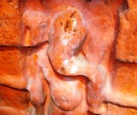

<?xml version="1.0" encoding="UTF-8"?><rss version="2.0"
	xmlns:content="http://purl.org/rss/1.0/modules/content/"
	xmlns:wfw="http://wellformedweb.org/CommentAPI/"
	xmlns:dc="http://purl.org/dc/elements/1.1/"
	xmlns:atom="http://www.w3.org/2005/Atom"
	xmlns:sy="http://purl.org/rss/1.0/modules/syndication/"
	xmlns:slash="http://purl.org/rss/1.0/modules/slash/"
	>

<channel>
	<title>Kaal Vinayak &#8211; Varanasi Temples</title>
	<atom:link href="index.html" rel="self" type="application/rss+xml" />
	<link>../../../../index.html</link>
	<description>Temples of Varanasi as referred to in Kashi Khand</description>
	<lastBuildDate>Thu, 19 Jun 2025 05:16:46 +0000</lastBuildDate>
	<language>en-US</language>
	<sy:updatePeriod>hourly</sy:updatePeriod>
	<sy:updateFrequency>1</sy:updateFrequency>
	<generator>https://wordpress.org/?v=4.6.29</generator>
	<item>
		<title>KAAL VINAYAK</title>
		<link>../../../../vinayak-temples/kaal-vinayak/index.html</link>
		<pubDate>Sat, 08 May 2010 02:47:10 +0000</pubDate>
		<dc:creator><![CDATA[admin]]></dc:creator>
				<category><![CDATA[Kaal Vinayak]]></category>
		<category><![CDATA[Vinayak Temples]]></category>

		<guid isPermaLink="false">../../../../p=154.html</guid>
		<description><![CDATA[Kaal Vinayak is located at K-24/10, Ram Ghat on the steps, below peepal tree. Devotees can travel upto Chowk by rickshaw and walk on foot to this place. Alternatively they can travel by boat upto Ram Ghat and walk up the steps and reach the place. Devotees who worship this Lord need not be afraid [&#8230;]]]></description>
				<content:encoded><![CDATA[<p>Kaal Vinayak is located at K-24/10, Ram Ghat on the steps, below peepal tree. Devotees can travel upto Chowk by rickshaw and walk on foot to this place. Alternatively they can travel by boat upto Ram Ghat and walk up the steps and reach the place. Devotees who worship this Lord need not be afraid of untimely death etc.</p>
<p></p>
<h3 style="text-align: center;">(KAAL VINAYAK)</h3>
<h3>TYPES OF POOJA</h3>
<p>The place of worship is open practically throughout and devotees can perform pooja by themselves.</p>
]]></content:encoded>
			</item>
	</channel>
</rss>
